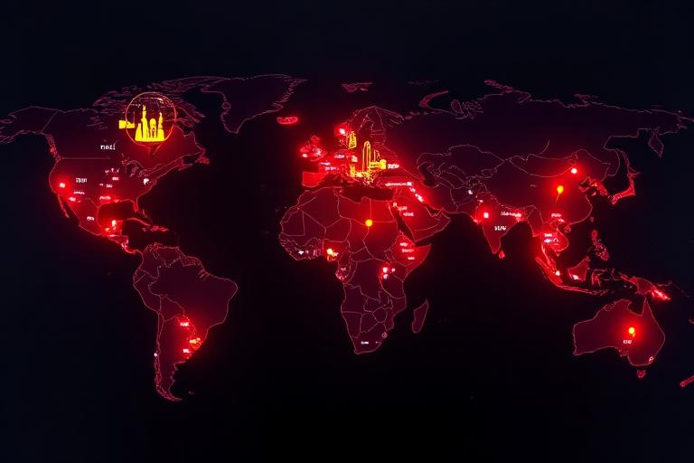
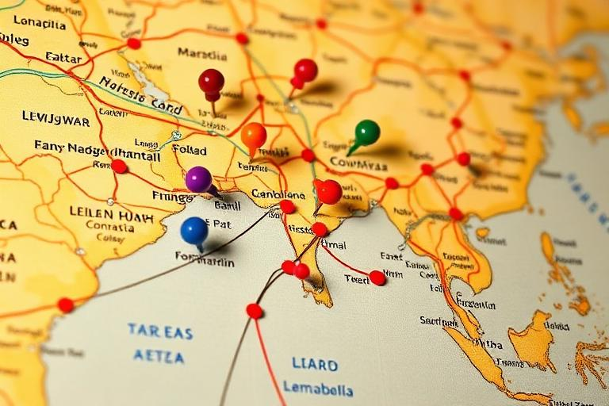
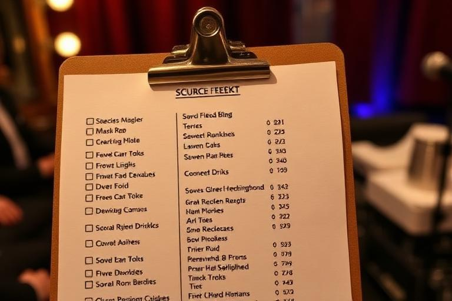

World planning
Cities, Opportunities & Travel
RockMundo’s world is deliberately geographical. Venues, studios, businesses, events and other opportunities belong somewhere, while your character is also somewhere. Travel is the system that connects those two facts—and creates planning decisions around time, cost and commitments.
In brief
Know where your character is, identify where the next physical commitment takes place, allow enough time to get there, and avoid booking activities that make the journey impossible. Bands should coordinate travel around the whole group’s live and recording schedule.
Why cities matter
Different cities create different local networks of places and activity. A city can contain venues, studios, businesses, landmarks, events and players, meaning location shapes what is convenient and what requires a journey.


Before you travel
- Check your current city.
- Check the city, date and time of the activity you are travelling for.
- Review everything scheduled between now and that commitment.
- Make sure the journey finishes with enough margin rather than exactly when the activity starts.
- Consider the cost of the journey alongside what the trip is likely to achieve.
- If travelling with a band, confirm how the band’s travel plan interacts with individual member activity.
Travel as scheduled activity
Travel occupies time. That is important because time is also used by lessons, work, songwriting, rehearsals, recordings, gigs and other activities. A route that is cheap but clashes with a major commitment may be a worse decision than a more expensive route that keeps the career intact.
- Start with the commitment. Identify where and when you must be.
- Work backwards. Find a journey that arrives with sensible margin.
- Check conflicts. Make sure no other activity becomes impossible because you are in transit.
- Confirm the destination. After arrival, verify the character is in the expected city before assuming the plan is complete.
Travelling with a band
Touring adds another layer because several people and multiple shows may need to move together. Band travel and follow-band options are designed to reduce repetitive coordination, but members should still review their own schedules and location when a tour is active.


When is travel worth it?
Travelling makes sense when the destination gives you something valuable enough to justify the time and cost: a show, festival, recording session, collaboration, business need, major event or longer tour route. It can also be worthwhile simply because you want your character’s story to move into a new scene.
What you should avoid is constant movement with no purpose. Every journey has an opportunity cost because the character cannot spend the same time on another scheduled action.
A simple itinerary method
Anchor events
Place the least flexible commitments first—gigs, festival slots, recordings or other fixed appointments.
Travel blocks
Add journeys before those anchors, with enough margin to recover from tight planning.
Flexible development
Fit practice, education and other activities around the fixed route where possible.
Review before adding more
Once the calendar becomes dense, check the whole week rather than treating each new booking independently.